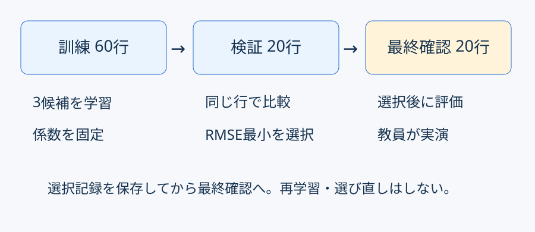
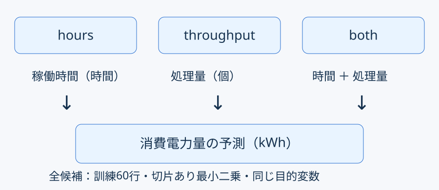
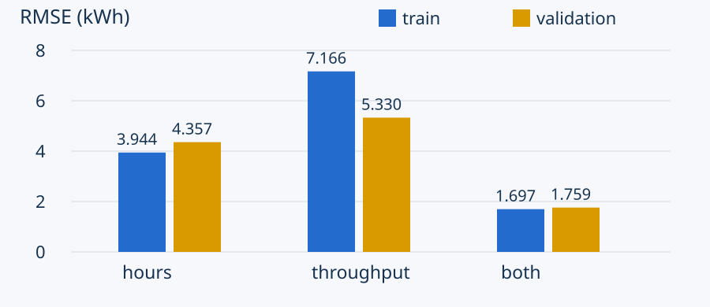
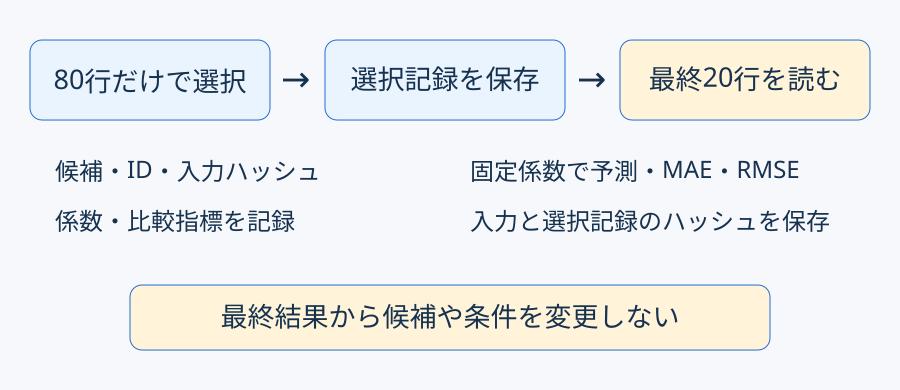

重回帰分析2
予想 → 選択変更 → 照合 → 説明
候補計算と描画は完成済みです。
変える：選択する候補のキー
どの候補の検証RMSEが小さそうですか。
予想と理由を一文残しましょう。


検証RMSEが最小の候補を選ぶ。
分母は対象件数。両指標の単位はkWh。

| 候補 | MAE | RMSE |
|---|---|---|
| hours | 3.659940 | 4.356684 |
| throughput | 4.482441 | 5.329957 |
| both | 1.555286 | 1.759485 |
単位kWh、概数。今回はbothを選択。
保存先はlesson12/output/です。
予測 = 切片 + 時間係数×4.8 + 処理量係数×116
係数を途中で丸めません。
今回は訓練・検証ともbothが最良。

条件を変えたら、比較は公平でしょうか。